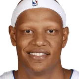

His best final NBA finish was #11 of 30, with the 2014-15 Dallas Mavericks. In his 655 games for 4 teams over 11 seasons they went 256–399 (39.1%), −143 games under .500, with an average final finish of 21.7.
Jump to: Record by opponent · Season by season · Teammate help
Compare Charlie Villanueva with…
Suggested, same era and similar teammate help:
Final NBA finish, season by season
Title Finals Other playoffs Missed playoffs. #1 = champion; the dashed line is last place that season. Each point opens that season's final standings.
All 30 teams ranked in 2014-15, his best finish (#11)Teammate help
 Chris Bosh1.01 season
Chris Bosh1.01 season Dirk Nowitzki1.01 season
Dirk Nowitzki1.01 season Brandon Knight0.21 season
Brandon Knight0.21 season
Career
Career records (W–L, W − L, with and without) include 2026-27 games through Nov. 22, 2026; season counts and finishes are through 2025-26. Each card opens its board in the same scope. How we count.

With and without his teammates
His 12 teammates with the most regular-season games together. "Together" is the team's record in the games both played for it; "Without him" is the team's record in the games Charlie Villanueva played for that team while the teammate was on it (between the teammate's first and last game for the team, the appearance span) and the teammate did not play. Fewer than 20 games without him: no gap. Games through Nov. 22, 2026. How we count.
 Rodney Stuckey
Rodney Stuckey Detroit 2009-10 to 2013-14
Detroit 2009-10 to 2013-14- Together
- 78–149 34.4%
- Without him
- 12–16 42.9%
- Gap
- 8.5 points higher
 Will BynumDetroit 2009-10 to 2013-14
Will BynumDetroit 2009-10 to 2013-14- Together
- 74–122 37.8%
- Without him
- 15–42 26.3%
- Gap
- 11.4 points lower
- Jason MaxiellDetroit 2009-10 to 2012-13
- Together
- 65–130 33.3%
- Without him
- 16–16 50.0%
- Gap
- 16.7 points higher
 Greg MonroeDetroit 2010-11 to 2013-14
Greg MonroeDetroit 2010-11 to 2013-14- Together
- 64–112 36.4%
- Without him
- N/A N/A
- Gap
- Too few games without him
- Charlie Bell
 Milwaukee 2006-07 to 2008-09
Milwaukee 2006-07 to 2008-09- Together
- 67–102 39.6%
- Without him
- 5–7 41.7%
- Gap
- Too few games without him
 Tayshaun PrinceDetroit 2009-10 to 2012-13
Tayshaun PrinceDetroit 2009-10 to 2012-13- Together
- 58–107 35.2%
- Without him
- 16–21 43.2%
- Gap
- 8.1 points higher
 Austin DayeDetroit 2009-10 to 2012-13
Austin DayeDetroit 2009-10 to 2012-13- Together
- 61–102 37.4%
- Without him
- 12–25 32.4%
- Gap
- 5.0 points lower
 Ben GordonDetroit 2009-10 to 2011-12
Ben GordonDetroit 2009-10 to 2011-12- Together
- 51–96 34.7%
- Without him
- 8–11 42.1%
- Gap
- Too few games without him
 Andrew BogutMilwaukee 2006-07 to 2008-09
Andrew BogutMilwaukee 2006-07 to 2008-09- Together
- 59–84 41.3%
- Without him
- 5–14 26.3%
- Gap
- Too few games without him
 Jonas JerebkoDetroit 2009-10; Detroit 2011-12 to 2013-14
Jonas JerebkoDetroit 2009-10; Detroit 2011-12 to 2013-14- Together
- 45–93 32.6%
- Without him
- 18–22 45.0%
- Gap
- 12.4 points higher
 Richard JeffersonMilwaukee 2008-09;
Richard JeffersonMilwaukee 2008-09;  Dallas 2014-15
Dallas 2014-15- Together
- 68–68 50.0%
- Without him
- 2–4 33.3%
- Gap
- Too few games without him
- Dan GadzuricMilwaukee 2006-07 to 2008-09
- Together
- 50–84 37.3%
- Without him
- 24–35 40.7%
- Gap
- 3.4 points higher
Latest completed seasons
Season by season
Newest first; every header sorts. Final NBA finish is the team's rank among all teams that season (#1 = champion) and opens that season's standings. "Without him" uses the team-season window; the span line counts only the games between his first and last game for the team.
| 2015-16 | #14 of 30 | 42–40 51.2% | Lost 1st round 1–4 | 61 of 82 | 28–33 45.9% | 14–7 66.7%span: 14–7, gap −20.8 | −20.8 | |
| 2014-15 | #11 of 30 | 50–32 61.0% | Lost 1st round 1–4 | 64 of 82 | 37–27 57.8% | 13–5 72.2%span: 13–4, gap −18.7 | −14.4 | |
| 2013-14 | #23 of 30 | 29–53 35.4% | Missed playoffs | 20 of 82 | 5–15 25.0% | 24–38 38.7%span: 20–30, gap −15.0 | −13.7 | |
| 2012-13 | #23 of 30 | 29–53 35.4% | Missed playoffs | 69 of 82 | 26–43 37.7% | 3–10 23.1%span: 3–7, gap +7.7 | +14.6 | |
| 2011-12 | #22 of 30 | 25–41 37.9% | Missed playoffs | 13 of 66 | 6–7 46.2% | 19–34 35.8%span: 18–31, gap +9.4 | +10.3 | |
| 2010-11 | #24 of 30 | 30–52 36.6% | Missed playoffs | 76 of 82 | 27–49 35.5% | 3–3 50.0%span: 2–3, gap −4.5 | −14.5 | |
| 2009-10 | #24 of 30 | 27–55 32.9% | Missed playoffs | 78 of 82 | 27–51 34.6% | 0–4 0.0%span: 0–4, gap +34.6 | +34.6 | |
| 2008-09 | #20 of 30 | 34–48 41.5% | Missed playoffs | 78 of 82 | 33–45 42.3% | 1–3 25.0%span: 1–3, gap +17.3 | +17.3 | |
| 2007-08 | #24 of 30 | 26–56 31.7% | Missed playoffs | 76 of 82 | 24–52 31.6% | 2–4 33.3%span: 2–4, gap −1.8 | −1.8 | |
| 2006-07 | #28 of 30 | 28–54 34.1% | Missed playoffs | 39 of 82 | 17–22 43.6% | 11–32 25.6%span: 6–19, gap +19.6 | +18.0 | |
| 2005-06 | #26 of 30 | 27–55 32.9% | Missed playoffs | 81 of 82 | 26–55 32.1% | 1–0 100.0%span: 1–0, gap −67.9 | −67.9 |
On/off, starts and close games
From the lineup data, 1996-97 on. On/off is net points per 100 possessions with him on the floor minus off, a different unit from the win-rate gaps. Started and off the bench are team records in those games; close games are those within 5 points in the last 5 minutes with him on the floor.
| 2015-16 | −7.4 | 3–1 75.0% | 25–32 43.9% | 5–10 33.3% | |
| 2014-15 | −7.9 | 0–1 0.0% | 37–26 58.7% | 5–5 50.0% | |
| 2013-14 | −16.9 | N/A | 5–15 25.0% | 0–3 0.0% | |
| 2012-13 | +0.3 | N/A | 26–43 37.7% | 6–11 35.3% | |
| 2011-12 | −17.6 | N/A | 6–7 46.2% | 0–3 0.0% | |
| 2010-11 | −1.7 | 4–7 36.4% | 23–42 35.4% | 11–16 40.7% | |
| 2009-10 | −7.7 | 5–11 31.2% | 22–40 35.5% | 15–18 45.5% | |
| 2008-09 | −2.0 | 16–31 34.0% | 17–14 54.8% | 13–15 46.4% | |
| 2007-08 | −4.7 | 8–23 25.8% | 16–29 35.6% | 12–13 48.0% | |
| 2006-07 | +1.9 | 5–12 29.4% | 12–10 54.5% | 3–6 33.3% | |
| 2005-06 | +6.0 | 11–25 30.6% | 15–30 33.3% | 14–24 36.8% |
Teammate help by season
Two separate numbers per season, each with every teammate that adds to it. Help this season = Teammates Score points for honors won that season by teammates who shared a game with him. Help coming in = the same teammates' honors from the season before. How help works.
- 2015-16DallasHelp this season: 0, no honored teammate
More: help coming in
Help coming in (teammates' honors the season before): 1 = 1 Dirk Nowitzki
- 2014-15Dallas
Dirk Nowitzki All-Star159 g
Help this season: 1 = 1 Dirk Nowitzki
More: help coming in and other teammates
Help coming in (teammates' honors the season before): 1 = 1 Dirk Nowitzki
Other teammates (no honors that season): Monta Ellis 62 g, Devin Harris 60 g, Jose Juan Barea 60 g, Richard Jefferson 58 g, Tyson Chandler 57 g, Al-Farouq Aminu 57 g, Chandler Parsons 49 g, Rajon Rondo 41 g, Greg Smith 37 g, Raymond Felton 28 g, Amare Stoudemire 22 g, Dwight Powell 20 g, Bernard James 16 g, Jae Crowder 14 g and 3 more
- 2013-14DetroitHelp this season: 0, no honored teammate
More: help coming in
Help coming in (teammates' honors the season before): 0.25 = 0.125 Kyle Singler + 0.125 Andre Drummond
- 2012-13Detroit
 Kyle Singler All-Rookie 2nd0.12569 gAndre Drummond All-Rookie 2nd0.12549 g
Kyle Singler All-Rookie 2nd0.12569 gAndre Drummond All-Rookie 2nd0.12549 g
Help this season: 0.25 = 0.125 Kyle Singler + 0.125 Andre Drummond
More: help coming in and other teammates
Help coming in (teammates' honors the season before): 0.25 = 0.25 Brandon Knight
Other teammates (no honors that season): Greg Monroe 69 g, Rodney Stuckey 64 g, Brandon Knight 63 g, Jason Maxiell 59 g, Will Bynum 53 g, Jonas Jerebko 36 g, Tayshaun Prince 35 g, Kim English 34 g, Jose Calderon 25 g, Vyacheslav Kravtsov 23 g, Khris Middleton 23 g, Austin Daye 23 g, Corey Maggette 14 g
- 2011-12Detroit
Brandon Knight All-Rookie 1st0.2513 g
Help this season: 0.25 = 0.25 Brandon Knight
More: help coming in and other teammates
Help coming in (teammates' honors the season before): 0.125 = 0.125 Greg Monroe
Other teammates (no honors that season): Ben Gordon 13 g, Greg Monroe 13 g, Jason Maxiell 13 g, Tayshaun Prince 12 g, Rodney Stuckey 12 g, Damien Wilkins 11 g, Jonas Jerebko 11 g, Will Bynum 11 g, Ben Wallace 10 g, Austin Daye 9 g, Walker Russell 6 g, Vernon Macklin 4 g
- 2010-11Detroit
Greg Monroe All-Rookie 2nd0.12574 g
Help this season: 0.125 = 0.125 Greg Monroe
More: help coming in and other teammates
Help coming in (teammates' honors the season before): 0
Other teammates (no honors that season): Ben Gordon 76 g, Tayshaun Prince 72 g, Tracy McGrady 67 g, Austin Daye 66 g, Rodney Stuckey 65 g, Will Bynum 56 g, Chris Wilcox 51 g, Richard Hamilton 51 g, Jason Maxiell 51 g, Ben Wallace 50 g, DaJuan Summers 20 g
- 2009-10Detroit
Jonas Jerebko All-Rookie 2nd0.12576 g
Help this season: 0.125 = 0.125 Jonas Jerebko
More: help coming in and other teammates
Help coming in (teammates' honors the season before): 0
Other teammates (no honors that season): Jason Maxiell 72 g, Rodney Stuckey 69 g, Austin Daye 65 g, Ben Wallace 65 g, Will Bynum 60 g, Ben Gordon 58 g, Tayshaun Prince 46 g, Kwame Brown 45 g, Richard Hamilton 44 g, DaJuan Summers 41 g, Chucky Atkins 38 g, Chris Wilcox 32 g
- 2008-09MilwaukeeHelp this season: 0, no honored teammate
- 2007-08MilwaukeeHelp this season: 0, no honored teammate
- 2006-07MilwaukeeHelp this season: 0, no honored teammate
More: help coming in
Help coming in (teammates' honors the season before): 0.25 = 0.25 Andrew Bogut
- 2005-06
 Toronto
Chris Bosh All-Star169 g
Toronto
Chris Bosh All-Star169 g
Help this season: 1 = 1 Chris Bosh
More: help coming in and other teammates
Help coming in (teammates' honors the season before): 0
Other teammates (no honors that season): Morris Peterson 81 g, Joey Graham 79 g, Mike James 78 g, Matt Bonner 77 g, Jose Calderon 64 g, Rafael Araujo 51 g, Jalen Rose 45 g, Pape Sow 42 g, Darrick Martin 39 g, Eric Williams 28 g, Loren Woods 27 g, Andre Barrett 17 g, Aaron Williams 13 g, Antonio Davis 8 g and 1 more
Record against each opponent
- Best regular-season record against one franchise: 18–7 (72.0%) against the Washington Wizards in 25 games.
- Toughest regular-season record against one franchise: 5–26 (16.1%) against the Chicago Bulls in 31 games.
Regular season, through 2025-26 (2026-27 games not included): 655 games, 256–399, against 30 franchises.
Grouped by franchise (named as today); game lists keep each team's name that season. Filters and the tab are kept in the URL, so a filtered view can be shared.
| Games list | |||||||
|---|---|---|---|---|---|---|---|
| 31 | 5–26 | 16.1% | −21 | N/A | 2005-06 to 2015-16 | ||
| 29 | 11–18 | 37.9% | −7 | N/A | 2005-06 to 2015-16 | ||
| 29 | 12–17 | 41.4% | −5 | N/A | 2005-06 to 2015-16 | ||
| 29 | 7–22 | 24.1% | −15 | N/A | 2005-06 to 2015-16 | ||
| 28 | 12–16 | 42.9% | −4 | N/A | 2005-06 to 2015-16 | ||
| 27 | 11–16 | 40.7% | −5 | N/A | 2005-06 to 2014-15 | ||
| 27 | 8–19 | 29.6% | −11 | N/A | 2005-06 to 2015-16 | ||
| 26 | 11–15 | 42.3% | −4 | N/A | 2005-06 to 2015-16 | ||
| 26 | 14–12 | 53.8% | +2 | N/A | 2005-06 to 2015-16 | ||
| 26 | 11–15 | 42.3% | −4 | N/A | 2006-07 to 2015-16 | ||
| 25 | 16–9 | 64.0% | +7 | N/A | 2005-06 to 2015-16 | ||
| 25 | 18–7 | 72.0% | +11 | N/A | 2005-06 to 2015-16 | ||
| 21 | 11–10 | 52.4% | +1 | N/A | 2005-06 to 2015-16 | ||
| 20 | 7–13 | 35.0% | −6 | 0–1 (1–4 in games) | 2005-06 to 2015-16 | ||
| 20 | 13–7 | 65.0% | +6 | N/A | 2005-06 to 2015-16 | ||
| 20 | 6–14 | 30.0% | −8 | N/A | 2005-06 to 2015-16 | ||
| 20 | 7–13 | 35.0% | −6 | N/A | 2005-06 to 2015-16 | ||
| 19 | 6–13 | 31.6% | −7 | N/A | 2005-06 to 2014-15 | ||
| 19 | 5–14 | 26.3% | −9 | N/A | 2005-06 to 2015-16 | ||
| 19 | 5–14 | 26.3% | −9 | N/A | 2005-06 to 2015-16 | ||
| 19 | 7–12 | 36.8% | −5 | N/A | 2005-06 to 2015-16 | ||
| 18 | 7–11 | 38.9% | −4 | N/A | 2005-06 to 2015-16 | ||
| 18 | 8–10 | 44.4% | −2 | 0–1 (0–4 in games) | 2005-06 to 2015-16 | ||
| 18 | 5–13 | 27.8% | −8 | N/A | 2005-06 to 2015-16 | ||
| 18 | 6–12 | 33.3% | −6 | N/A | 2005-06 to 2015-16 | ||
| 17 | 5–12 | 29.4% | −7 | N/A | 2005-06 to 2015-16 | ||
| 17 | 5–12 | 29.4% | −7 | N/A | 2005-06 to 2015-16 | ||
| 16 | 4–12 | 25.0% | −8 | N/A | 2005-06 to 2015-16 | ||
| 15 | 10–5 | 66.7% | +5 | N/A | 2005-06 to 2015-16 | ||
| 13 | 3–10 | 23.1% | −7 | N/A | 2005-06 to 2012-13 |
Rows add up to his career record in his games. A playoff series counts when he played in it; early round-robin games show as games only. How we count.
Playoffs, with and without him
Arrival and departure
Team wins per 82 games the season before he arrived vs his first season there, and his last season vs the season after he left. He leaves a team only when his next season with games is for another team (or he never plays again); whole seasons he missed and came back from are one "Missed" row with the team's record without him. Per 82 so short seasons compare fairly. These are team records, not a measure of what he did.
| Left | after 2015-16 | 2015-16: 42–40 42.0 per 82 | 2016-17: 33–49 33.0 per 82 without him | −9.0 wins | |
| Arrived | 2014-15 | 2013-14: 49–33 49.0 per 82 | 2014-15: 50–32 50.0 per 82 | +1.0 wins | |
| Left | after 2013-14 | 2013-14: 29–53 29.0 per 82 | 2014-15: 32–50 32.0 per 82 without him | +3.0 wins | |
| Arrived | 2009-10 | 2008-09: 39–43 39.0 per 82 | 2009-10: 27–55 27.0 per 82 | −12.0 wins | |
| Left | after 2008-09 | 2008-09: 34–48 34.0 per 82 | 2009-10: 46–36 46.0 per 82 without him | +12.0 wins | |
| Arrived | 2006-07 | 2005-06: 40–42 40.0 per 82 | 2006-07: 28–54 28.0 per 82 | −12.0 wins | |
| Left | after 2005-06 | 2005-06: 27–55 27.0 per 82 | 2006-07: 47–35 47.0 per 82 without him | +20.0 wins | |
| Debut | 2005-06 | 2004-05: 33–49 33.0 per 82 | 2005-06: 27–55 27.0 per 82 | −6.0 wins |
Best duos
Team record in regular-season games both played, top 10 by win %, at least 50 games together.
 Monta Ellis
37–25 59.7%
Monta Ellis
37–25 59.7% Tyson Chandler
34–23 59.6%
Tyson Chandler
34–23 59.6% Al-Farouq Aminu
32–25 56.1%
Al-Farouq Aminu
32–25 56.1% Devin Harris
57–50 53.3%
Devin Harris
57–50 53.3% Jose Juan Barea
60–53 53.1%
Jose Juan Barea
60–53 53.1%- Dirk Nowitzki
58–55 51.3%
 Chandler Parsons
47–46 50.5%
Chandler Parsons
47–46 50.5%- Richard Jefferson
68–68 50.0%
 Zaza Pachulia
27–29 48.2%
Zaza Pachulia
27–29 48.2% Wesley Matthews
26–31 45.6%
Wesley Matthews
26–31 45.6%